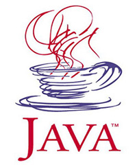
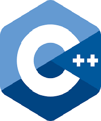
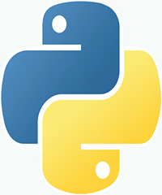
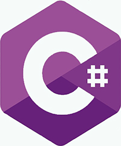

If you want to learn how to program in efficient way we have great selection of languages you have come to the right place!.
No prior programing experience is required.
We guarantee that learning with Programing Languages is fast, effective and fun.
Unlock new levels, take quizzes, collect points and compete with peers from around the world.
Most importantly, learn while having fun, because being engaged when learning makes all differences in the world.

It was developed 1995 by James Gosling at Sun Microsystems (today subsidiary of the Oracle). Java is a genral-purpose programming language that is class-based and object-oriented. Java is platform agnostic which means one code should work on many different hardware platforms, this feature is called WORA (write once, run anywhere).

C++ is used when great performance and flexibility are required for example developing operating systems, video games. C++ was developed by Bjarne Stroustrup at Bell Labs in 1979 as an extension of C language. C++ is a general-purpose programming language that is class based, object-oriented.

Thanks to its realtivily simple syntax Python is one of the most popular programming languages. Developed in 1991 by Guido van Rossum, Python is interpreted, high-level, general-purpose, object-oriented programming language. It is often used by scientists.

C# was developed in 2000 by Andeers Hejlsberg at Microsoft. It is genral purpose, mulit-paradigm, object-oriented programming language. C# is very popular in Indie game developers thanks to its re